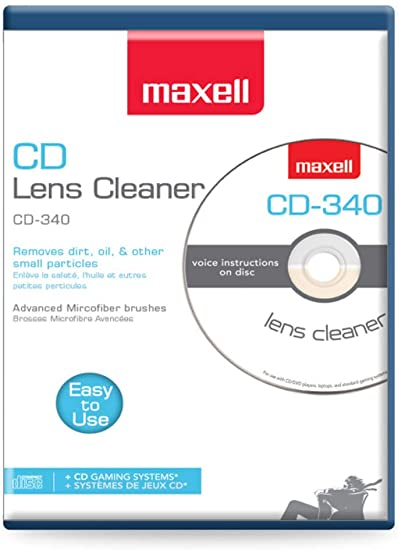

Below is a list of the main services I aim to provide with Supercharged Games. If you have any service you wish to inquire about that is not listed, reach out and I may be able to accomodate your needs.
The primary service we offer here at Supercharged Games is the buying and selling
of video games & consoles, primarily retro ones. It is our promise here at
Supercharged to never scalp
Here is an example of some games I recently purchased.
Some of My Retro Games
A second but equally important service that we offer here at Supercharged, is the ability
for our customers to bring in their dirty or damaged discs which we will repair for them
for a small fee. We only charge if the game is able to be fixed, and if any of our customers
would prefer to try the repair on their own, all we do is use the Maxelltm
disk cleaner on them.
Here is a photo of the exact one we use.

Maxell Disk Cleaner
Finally, at Supercharged we like to give our customers a safe place to gather
and enjoy their favorite games together. In pursuit of this, we host monthly gaming
tournaments. While they may not be quite as large as events like Smash Summit 1 , where
Mang0 finally claimed his first Summit title,
we still end up with quite the turnout and a few well-known players such as Flipsy and DaShizWiz.